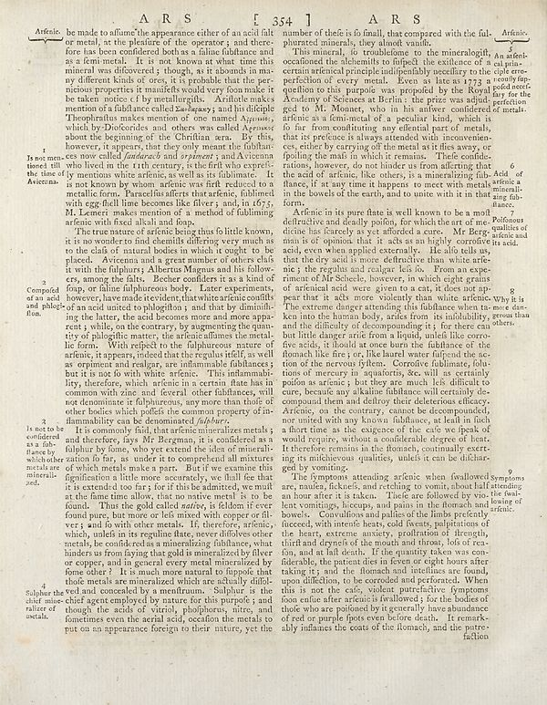

Source · scan and Parse blocks
Layers 2

Parse text by block reading order
- 0Page-headerA R S 354 7 A R S
- 1TextArticle, be minde to affirm the appearance either of an acid that or metal, at the pleasure of the operator; and therefore has been confidered both as a false fuhlance and as of feminism. It is not known as what time this mineral was discovered; though, as it always in many different kinds of ones, it is probable that the per- niction properties is maiile’s well very from having the taken notice of by marginalitys. Articles makes mention of a fullbure called _Larzagayy_ and his dicliple Theodorants makes mention of one named _Myrable_, which by Diodocides and others was called _Apposer_ about the beginning of the Chiffan area. By this, however, it appears, but they only means that fulborn now called _fadedreach_ and _or pioneer_; and Arizona who lived in the rich century, is the first way except the majority of my mentions white article, as well as its folibrance. It is not known by whom arénic weft reduced to a metallic form. Paradella after thatarfenie, following with goldall line become like the eyes; and, in 07; M. Lemeri makes mention of a method of fulfilling arénic with fixed all all and loop.
- 2TextThe true nature of artisticening thus fo little knowo, it is no wonder to find chemills differing very much as to the clafe of a natural bodies in which I ought to be placed. Avicans and a great member of other clash it with the fulphurts; Albertus Magnus and his follow- er, among the flats. Deber conflicts it as kind of pop, on faina fulphureos body. Later experiments, however, have made residents, that white are the conflict for some such unusual to playable, and that by diminishing the history, the acid becomes more and more apperate, while, on the contrary, by augmenting the pana- entity of playingthe role, present by of playingthe role. For information the metal- licorn. With respect to the fulphurous nature of arleni; it appear, indeed that the regulardif, as well as organism and realger, are infamable filialances; but it is not lo with white arnico. This inflammabri- , therefore, which arleni in a certain date has in common with zinc and several other than others, will not denominate ir fulphuircous, any more than those of other bodies which yields the concourty property ofin- malmality can be determined (_fulphur._
- 3TextIt is commonly laid, that arémic mineralizes metals (and therefore, fays Mr Bungman, if is considered as it fulphur by bone, why very extend the idea of mineralization for far, as under it to comprehend all mixtures of which metals take a part. But if we examine this ignitional a little more accurately, shall lie that that it extended too far;) for If this is admitted, we must at the fame time allow, that no native merit is to be found. Thus the gold called _native_, is feldom if ever found pure, but none or feel mixed with copper oil- vers and lo with other metal. If therefor, arénica, which, unlets in its regulate flare, never diffolver other metals, be considered as a memorizing flatthanase what hinders a troonying that gold and ameralized by fiber or copper, and in general every metal mineralized by forms other? It is also more natural to lopard and cloak media are mineralized, which are oftenly dililved and conceded by a mentrum. Sunlpur is the chief agent employed by name, for the purpose, and though, the acids or vitrol, phhoureus, nitre, and femmes even the aerial acid, occasion the metals to put on an appearance foreign to their nature, yet the
- 4Textnumber of their is fo small, that compared with the ful- phurated minerals, they almost worth).
- 5TextThis mineral, io troublelemo to the mineralogit, occidental the fleshkits to forget the setience of a certain artificial principle potentially prescribe to the perfection of every metal. Even as late as 1773 a qualifiers to this purple, was propelled by the Royal Academy of Sciences at Berlin, the prize was adjudged to M. Monnet, who in his answer considered arferies is at the most of a peculiar kind, which is to fur from confidence any oriental part of metal, that its preference is always attended with inconvenience, ses active by carrying of the metal is if the away, or polling the matis in which is remains. Their conditions, however, do not hinder us from affaring that the said of offering like others, is important for ful- hanced, at any time it happens to meet with metals in the bowels of the earth, and to unite with it in that forms.
- 6TextArdenic in its pure haze is well known to be a motif effective and literally potion, for which the art of red circle has finitely a yet afforded a cure. Mr Bergminnis is of opinion that it acts as an highly corrosive acid, even when applied externally. Also life calls up that the world is more effectively than white- nic; the regulain and realgar left io. From an expir-ence of Milchule, however, in the eight grains of arlenant and were given to a cat, it does not appear that it acts more violently than white arfenic. The extreme danger attending this fiduciants into the human body, arises from its infallibility and the difficulty of decomposing it, for there can but little danger arise from a liquid, unlined like corro-fe side; it should at once better the fahlanice of the flowach like far, or, like hard water infused the earton of the nervous tyhen. Cornork fullamate, flu-tions of mercury in aqualuoris, etc. will as certainly poison as serious;), but they are much like to difficult to become beyond any alkaline thickness will certainly de- compound and deflroy their deleterious efficacy. Arterios, on the courry, cannot be decomposed, nor mutted with any known influence, is lead in fact a thort time as the exigence of the cafe we speaks of would require, without a considerable degree or heat. Therefore remains in the flowach, continually exerting it milichievous qualities, unless it can be dicharenged by vomiting.
- 7TextThe Symptom attending arénic when followed are, nausea, jackets, and resting to vomitals, about half extending the hour after it is taken. There are followed by vine, less vomitings, biceps, and pain in the stomach and bowel. Convivilon and palises of the limbs perfectly associated, which became best could force, palpitations of the heart, extreme anxiety, proflation of through, lifted and periods of the mouth and throat, lots of re- tion, and at fall death. If the quantity takes you en- diderable, the patient dies in fewer or eight hours after taking it; and the flowach and ultinctures are found, and then difficile to be recorded and performed. When this is not the cafe, violent protective symptoms from one after article is followed, for the bodres of whole who are poisoned by it generally have abundance of red or purple spots even before death. It remarkably inflames the coats of the Ilomach, and the patre- fation
Provenance page_id, checksum, Parse model
- page_id
- britannica:309f765b1ecc83e0a7f7762e44b4a927a7555443:train:1722
- sha256
- bda8f6e99dca3137bcc24a247711bb8a5b44e4442131f0bb341049bfe2c6d63f
- Parse
- nvidia/nemotron-3.5-parse · finish stop